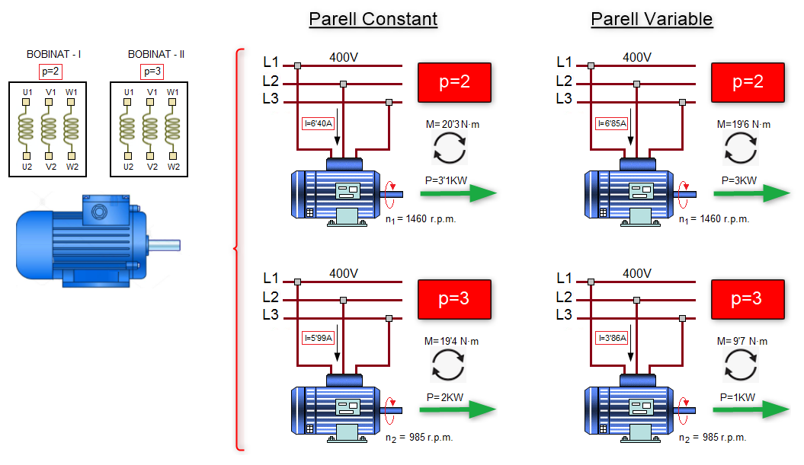
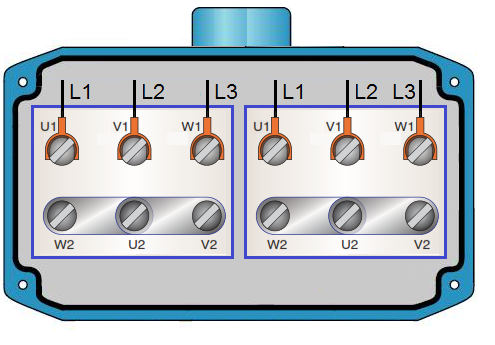
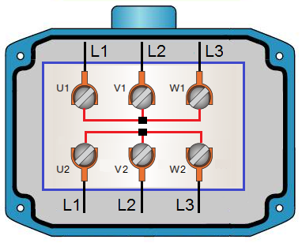

En aquest tipus de motor es col·loquen en les ranures de l'estator del motor dos bobinats amb diferent nombre de pols (p1 i p2), ocupant cadascun d'ells la meitat de la ranura. Es evident, que intentar col·locar més de dos bobinats per ranura donaria lloc a motors de grans dimensions. Per aquest motiu, l'ús de bobinats independents amb diferents nombre de pols es limita a un màxim de dos bobinats per motor
Des d'un punt de vista funcional un motor amb dos bobinats independents i diferent nombre de pols es comporta en realitat com dos motors amb característiques diferents segons s'active el primer o el segon bobinat (veure figura).

El motor de dues velocitats i dos bobinats independents pot utilitzar-se per obtenir virtualment qualsevol combinació de velocitats nominals del motor, encara que són preferibles els motors amb relació de velocitat diferent a 2: 1. Les combinacions de parell de pols o imants que es solen utilitzar en aquests tipus de motors són:
- 6-2: 500 r.p.m. i 1500 r.p.m.
- 3-2: 1000 r.p.m. i 1500 r.p.m.
A més del nombre de pols, és important conèixer el tipus de càrrega que haurà d'accionar el motor. Per tant, aquest motors es classifiquen en:
- Motor de dues velocitats amb bobinats independents i Parell Constant
- Motor de dues velocitats amb bobinats independents i Parell Variable


Connexió a la xarxa elèctrica
Aquests motors només es poden connectar a una única tensió i l'únic tipus d'arranc permés és el directe. Es pot accedir al bobinats mitjançant la seva caixa de connexions. En aquests cas disposarem de 12 terminals, 6 per cada bobinat. El tipus de connexió (Estrella o Triàngle) dependrà de la tensió de funcionament del motor i de la tensió de la xarxa.

De vegades les connexions són internes (generament en estrella) i per tant, disposem d'una caixa de connexions amb sis terminals (3 per cada bobinat, veure figura)
